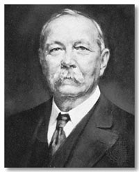

Sir Arthur, Sherlock, Julian
Jutros me Google podsetio da je na danasnji dan rodjen Sir Arthur Conan Doyle (how cool is that?), veliki engleski pisac, tvorac legendarnog Sherlock Holmesa, kao i zivopisnog Professor Challengera. Moram priznati da o zivotu Sir Arthura nisam znao mnogo; do pre samo par meseci, osim grubih vremenskih odrednica i nepreciznog osecaja da autor Sherlock Holmesa ima neke veze sa Skotskom, skoro nista.
Naravno, kao klinac sam citao nekoliko dela Sir Arthura, a Sherlock Holmes je neizbezni deo odrastanja svakog decaka koji voli knjige. Kasnije je dosao na red i neponovljivi Jeremy Brett u ulozi detektiva iz 221B Baker Streeta. Ipak Sir Arthur i njegov zivot do skoro su za mene ostali nepoznanica.

A onda, u sake mi je stigla izuzetna knjiga. Julian Barnes jedan je od onih retkih autora koji "ne mase". Ne secam se da sam do sada procitao njegovu losu knjigu. Arthur & George nastavlja niz. Imajuci za temu zivot Sir Arthur Conan Doyla knjiga uspeva naizgled nemoguce, vraca citaoca jedan vek u nazad, i u magicnom ritmu na predivan nacin pripoveda o zivotu legendarnog pisca, o ljubavi i slozenosti medjuljudsih odnosa.
 "I try to find new stories that have the texture of life, but in fact have the texture of a book". Mozda je kljuc uspeha i ovog romana Julian Barnesa u cinjenici da je proveo citavih godinu dana u pripremi materijala, sakupljanju gradje, analizi, gradjenju likova i odnosa medju njima. Ipak, knjiga nije opterecena ovim saznanjima, na protiv, atmosfera je magicna, sve je na svom mestu, a dobar engleski humor i savrseno izgradjen stil su izvor prave uzivancije. Julian Barnes zna kuda ide roman, to je veliki kvalitet a ritam kojim se sve desava je apsolutno besprekoran. Na kraju, odvojite par minuta i posetite sajt posvecen romanu Arthur&George, mozda ukacite delic magije.
"I try to find new stories that have the texture of life, but in fact have the texture of a book". Mozda je kljuc uspeha i ovog romana Julian Barnesa u cinjenici da je proveo citavih godinu dana u pripremi materijala, sakupljanju gradje, analizi, gradjenju likova i odnosa medju njima. Ipak, knjiga nije opterecena ovim saznanjima, na protiv, atmosfera je magicna, sve je na svom mestu, a dobar engleski humor i savrseno izgradjen stil su izvor prave uzivancije. Julian Barnes zna kuda ide roman, to je veliki kvalitet a ritam kojim se sve desava je apsolutno besprekoran. Na kraju, odvojite par minuta i posetite sajt posvecen romanu Arthur&George, mozda ukacite delic magije.
Komentari
Božemeprosti, ovaj gore komentar kao da sam ja pisala. Ko bi drugi toliko puta ponovio super, ko?
S from L.A. | 23.05.06 04:59
Meni je super fascinantan taj Googlov izbor dogadjaja koje ce da obeleze
La Lara | 23.05.06 10:00
propustila sam juliana u zg. naravno da me to grize. volim onaj dio o raju iz povijesti svijeta u devet i po poglavlja i još mnogo šta. ovo nisam pročitala
alethea | 23.05.06 12:41
meni je superrrr S from LA )))))))
redsandra | 23.05.06 14:14
RedS, i ti si meni super cico :)
 RSS feed
RSS feed
 sadržaji se objavljuju pod
sadržaji se objavljuju pod
Obožavatelj! Super je Ser Artur Konan! I onaj njegov bipolarni narkoman od detektiva, i on je super. I Džeremi Bret je super! A nisam čitao taj Barnsov roman, ali verujem da je i on baš 'sjuper'! :)